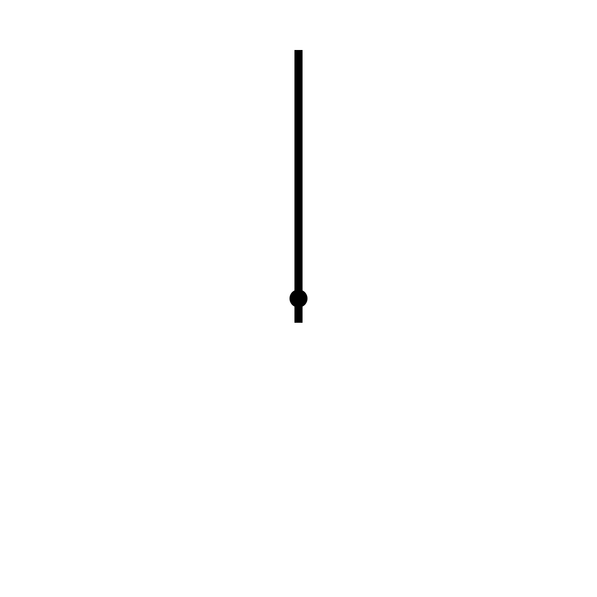

<body>
  <main>
    <div class="container-fluid">
      <h1 class="my-4 text-center" id="defaultTitle">
        <span class="fas fa-cloud my-color-moku fa-3x fa-fw faa-bounce animated-hover" aria-hidden="true">
        </span>
        mokuる
      </h1>

      <div class="card text-white bg-info mx-3 mb-3">
        <div class="card-body text-center" id="afterStartTitle" style="display:none;">
          <h3>ただいまmokuタグ○○でMOKUっています！</h3>
        </div>
      </div>

      <div class="row pt-4">
        <div class="col-12 col-md-6 pb-4">
          <section>
            <div id="clockImage" style="margin:auto, display:none;">
              <!--文字盤-->
              <!--短針-->
              <!--長針-->
              <!--秒針-->
            </div>
          </section>
        </div>

        <div class="col-12 col-md-6 pb-4">
          <section>
            <div class="card text-white bg-info mr-3 hidden-xs">
              <h5><div class="card-header text-center">moku JUST NOW</div></h5>
              <div class="card-body">
                <ul>
                    <li>19/02/10 14:27 管理者さんがとりあえずMOKUるでMOKUを開始しました！</li>
                </ul>
              </div>
            </div>
          </section>
        </div>
      </div>

      <%= form_with(model: @moku,
                    url: {controller: :mokus, action: :create, user_id: current_user.id},
                    method: :post,
                    local: true) do |form| %>

        <div class="row">
          <div class="col-12 col-md-6 pb-4">
            <section>
              <div class="card text-white bg-info mb-3">
                <div class="card-body text-center" id="selectMokuType">
                  <h3>mokuタグを<br>選ぼう！</h3>
                </div>
                  <div class="form-group m-3">
                    <%= form.collection_select :moku_type, @user.active_moku_types, :id, :name, selected: @user.moku_types %>
                  </div>
              </div>
            </section>
          </div>
        </div>

        <div class="col-12 col-md-6 pb-4">
          <section>
            <div class="card text-white bg-info mb-3">
              <div class="card-body text-center">
                <h3>準備はOK？<br>さあmokuろう！</h3>
              </div>
              <p  class="pagination justify-content-center pb-3">
                <button type="button" class="btn btn-light btn-lg" id="startButton">MOKU開始！</button>
              </p>
            </div>
          </section>
        </div>
      <% end %>

        <input type="hidden" id="startedMokuId"/>
        <span id="timer"></span>


        <input type="submit" id="pauseButton" style="display:none;" value="一時停止！"/>

        <%= form_with(url: 'dummy', method: :patch, local: true, id: 'finishForm') do |form| %>
          <input type="hidden" name="moku_time" id="mokuTime" value=""/>
          <input type="submit" id="stopButton" style="display:none;" value="MOKU終了！"/>
        <% end %>

        <section>
          <h3 id="linkToMypage"><i class="fas fa-reply fa-4x my-color-reply"></i><br><%= link_to("マイページへ戻る", "/mypage")%></h3>
        </section>

        <%= render 'moku_js' %>
      </div>
    </main>
  </body>